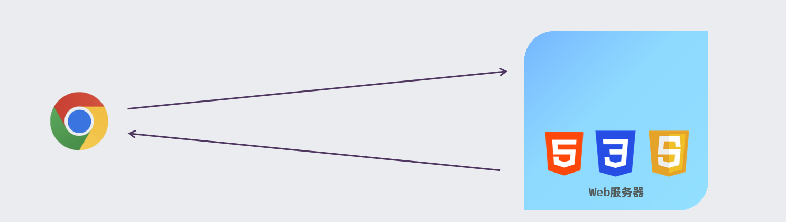
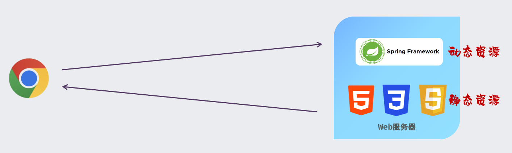
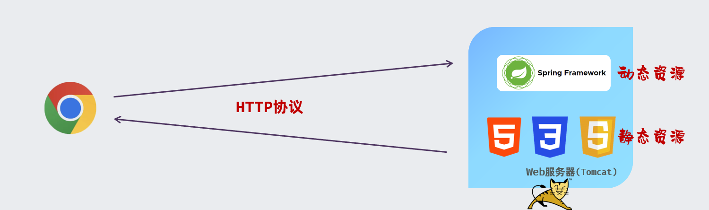

Web 基础：静态资源与应用架构
必备 基础知识
那在前面讲解Web前端开发的时候，我们学习了前端网页开发的三剑客HTML、CSS、JS，通过这三项技术，我们就可以制作前端页面了。 那最终，这些个页面资料，我们就可以部署在服务器上，然后打开浏览器就可以直接访问服务器上部署的前端页面了。

而像HTML、CSS、JS 以及图片、音频、视频等这些资源，我们都称为静态资源。 所谓静态资源，就是指在服务器上存储的不会改变的数据，通常不会根据用户的请求而变化。
那与静态资源对应的还有一类资源，就是动态资源。那所谓动态资源，就是指在服务器端上存储的，会根据用户请求和其他数据动态生成的，内容可能会在每次请求时都发生变化。比如： Servlet、JSP等(负责逻辑处理)。而Servlet、JSP这些技术现在早都被企业淘汰了，现在在企业项目开发中，都是直接基于Spring框架来构建动态资源。

而对于我们java程序开发的动态资源来说，我们通常会将这些动态资源部署在Tomcat，这样的Web服务器中运行。 而浏览器与服务器在通信的时候，基本都是基于HTTP协议的。

那上述所描述的这种浏览器/服务器的架构模式呢，我们称之为：BS架构。
BS架构：Browser/Server，浏览器/服务器架构模式。客户端只需要浏览器，应用程序的逻辑和数据都存储在服务端。通过网页可以直接访问获取到 数据 ;
优点：维护方便
缺点：体验一般 . 基于自己的网络速度 , 向服务器访问获取到数据 ;
CS架构：Client/Server，客户端/服务器架构模式。需要单独开发维护客户端。 类似软件安装 , 大小一般很大 , 内容都在本地 , 调用逻辑速度 快 ;
优点：体验不错
缺点：开发维护麻烦